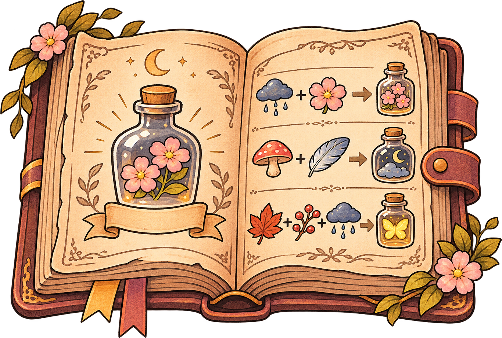
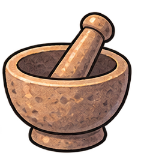
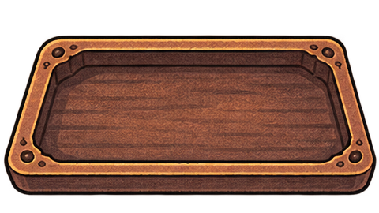
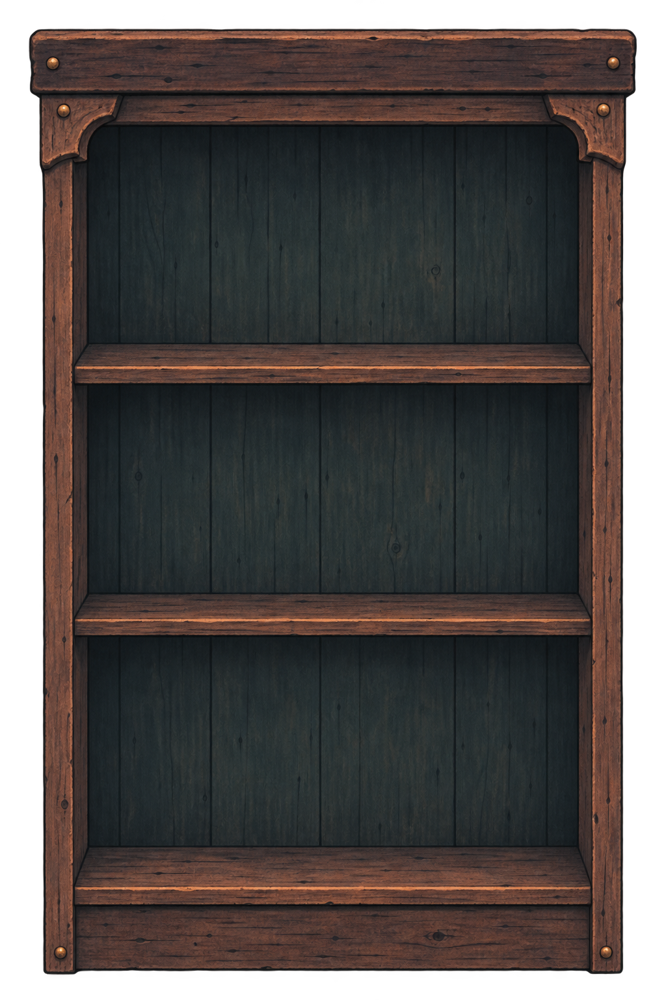

MISERY & CO.
阴雨小铺
?
打烊
雨水 +3
♡
材料柜

配方
01
材料处理

放入
取回
02
温热与调和
加入
点火
03
过滤与封存
封瓶
按住倾倒
退料

备料盘
从材料柜拿取原料

随身备料盘 ·
选中 · 放回
放回柜子
✿
✿
✦
点小路走动 · 靠近采集
回工坊 →
♧
×
♧
⌂ 接待顾客
⚗ 制作商品
♧ 前往小镇
进度自动保存在本机
×
← 返回小镇